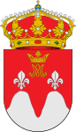
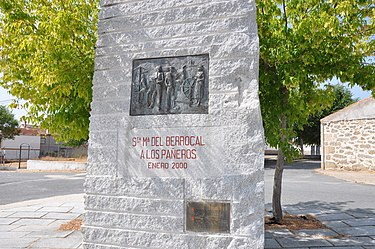
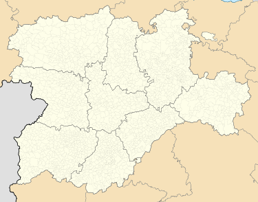
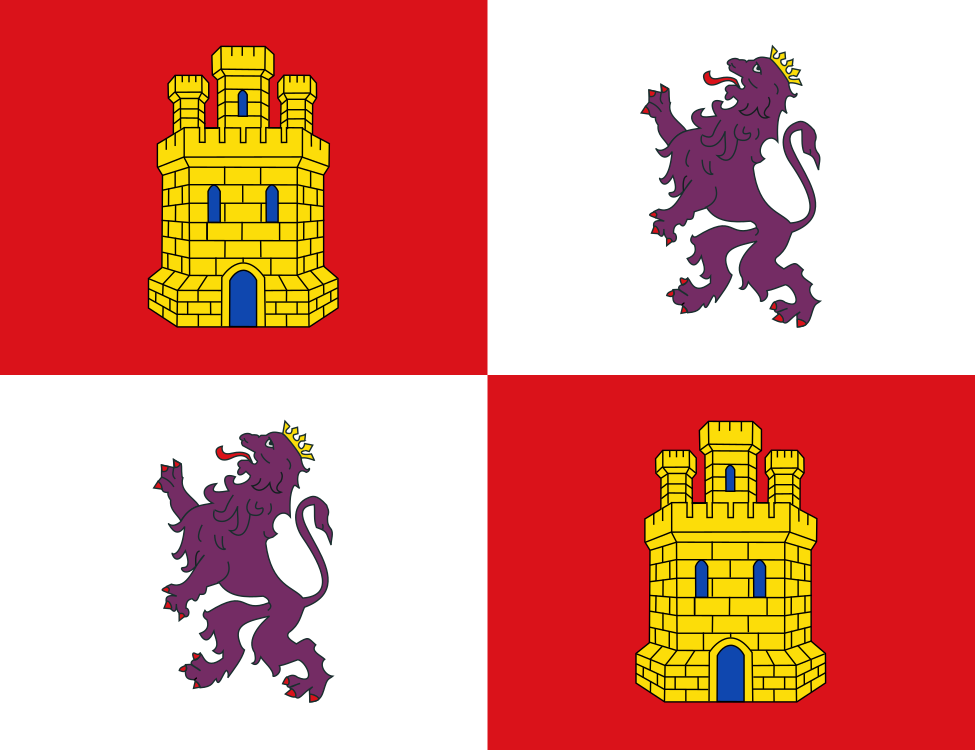

Santa María del Berrocal is a municipality located in the province of Ávila, Castile and León, Spain. According to the 2006 census, the municipality has a population of 486 inhabitants.

Country: Spain
Autonomous community: Castille and León
Province: Ávila
Municipality: Santa María del Berrocal



Monument to the draper in Santa María del Berrocal.